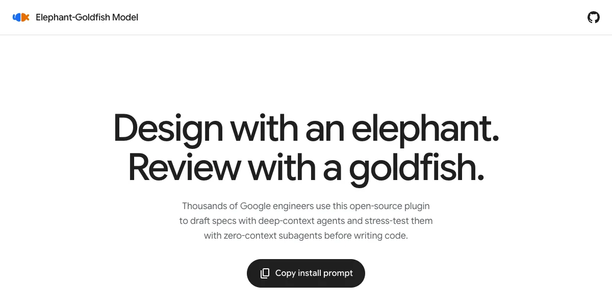

一句话：它是什么
Elephant-Goldfish Model（大象-金鱼模型，简称 EGM）是 Google 开源的一个编码 Agent 插件，口号是“Design with an elephant. Review with a goldfish.”——用大象做设计，用金鱼做评审。它是一套 SKILL.md 技能 + 评审人格提示词 + 文档标准，装进 Antigravity、Claude Code、Codex（以及 Claude Cowork、ChatGPT Work 等）之后，让你在写代码之前先和一个“深上下文”的 Agent 把功能的设计规格谈清楚、写下来，再派一群“零上下文”的子 Agent 去挑刺，最后由你本人拍板。
它不是一个新模型，也不自带推理服务：用的是宿主 Agent 的模型和权限。README 写道，已有数千名 Google 工程师在用它。
名字的意思：一个关于“记忆”的比喻
是的，名字讲的就是记忆。方法论作者 Dave Rensin 在长文里用了一句英文谚语：“An elephant never forgets.”（大象从不遗忘。）
流程浓缩成一句话就是：喂饱大象，再拿金鱼来检验（原文：“Feed the Elephant; test it against the Goldfish.”）。如果一个毫无前情的金鱼读完你的文档，说不清你要做什么、系统现在怎么运作，那就说明文档依赖了只存在于大象脑子里的上下文——要补。
为什么要这么做
EGM 的架构文档把“直接和 AI 聊着写代码”的毛病归为四类：
- 幻觉级联与上下文污染：同一个会话既访谈、又设计、又写码，猜测和对话偏见越积越多，模型会替自己的错误假设背书。
- 过早实现（“陷进杂草”）：编码 Agent 习惯在就近文件里直接开写，跳过架构放置、YAGNI 简化与复用已有设施。
- 聊天倾倒疲劳：把几页长的规格和评审意见直接贴进聊天，既难读，又拖累模型的上下文表现。
- 文档漂移：项目启动时写的设计文档随代码演进而腐烂，后来的 Agent 无从上手。
Rensin 的长文给出了更个人化的来路：一次长会话中途崩溃，新会话从零开始，他意识到如果有一份写清意图与进度的文档，重新进入状态只要 30 秒；接着发现模型会“欣然冲下悬崖”，需要护栏；最后的顿悟是一行式子——sizeof(docs) << sizeof(code)：用简明英文的设计文档给 AI 上下文，比让它读成千上万行代码更便宜、更快、更可靠。由此他的结论是“设计就是新的代码”（Design is the new code）：当代码越来越多由 AI 写出、人难以逐行审阅时，真正需要人读懂并签字的，是设计。
它怎么工作

site/screenshots/，随本站明暗模式切换）。仓库由四层组成：
- 技能层
skills/：七个可用斜杠命令调用的技能（见下表）。 - 人格层
agents/：金鱼评审的系统提示词。每个金鱼都被要求“严格只读”、“无状态”（像刚入职的新人那样读文档）、“不闲聊”。人格包括：怀疑派架构师（Zoom Out，专抓过度设计与 YAGNI）、天真读者（Comprehension）、设计批评者（Design Critic）、实现就绪度（Implementation Readiness）、代码库审计（Codebase Details）、结构校验（Structural）、文风编辑（Style），以及负责并行派发、去重、按 🔴 阻塞 / 🟡 重要 / 🟢 小问题分级汇总的 Synthesizer。 - 文档标准
resources/document_standards/：金鱼评审对照的版本化评分标准。 - 活文档
docs/：使用指南与设计规格本身（EGM 自己也用 EGM 写设计）。
主流程大致是：
/egm-brainstorm：大象先访谈你、锚定核心假设，再派出 6 个视角的金鱼“击落”有缺陷的设想，产出concepts_brief.md。/egm-draft：把概念简报逐节写成设计文档（放在docs/designs/），每写完一节停下来等你在聊天里反馈。/egm-review：在全新、零上下文的会话里分阶段评审——先 Zoom Out 查是否过度设计，再做理解测试（文档能否自洽），然后批评者审架构、规模瓶颈与失败模式，中途再查一次臃肿，最后核对实现计划里的文件路径、函数签名与测试用例。每轮发现用/egm-resolve和你一起逐条处理。- 人工评审：把设计文档当 PR 发给真人同事。
- 实现：让编码 Agent 照文档实现；跑偏得厉害就回去改文档。
/egm-drift-report：建议每周跑一次，对比已提交的文档与当前代码，发现漂移由人决定改文档还是改代码。
对已有的老代码库，/egm-bootstrap 自底向上递归生成各目录的 README——长文里管这叫给大象喂“花生和干草”：从叶子目录开始让 AI 写 README、人花 5–10 分钟修正（作者说叶子层 AI 大约一半是错的），再逐层向上汇总，最后用一棵 README 树就能让新会话迅速理解整个代码库。
硬性前提：金鱼评审必须能开出全新上下文的子 Agent。如果宿主不能，EGM 会直接停止评审，而不是在同一会话里假装评审。另外，所有长篇产出都写进文件或侧边产物面板，不往聊天里倾倒。
怎么用
安装（选你的编码 Agent，装完整插件，因为技能运行时要读 agents/ 与 resources/）：
# Antigravity
agy plugin install https://github.com/google/elephant-goldfish-model
# Claude Code
claude plugin marketplace add google/elephant-goldfish-model
claude plugin install egm@egm
# Codex
codex plugin marketplace add google/elephant-goldfish-model
codex plugin add egm@egm装完开新会话。Antigravity 里直接用 /egm-brainstorm；Claude Code 里加前缀 /egm:egm-brainstorm；Codex 在技能选择器里选。README 的示例是给项目加 webhook 投递：投递失败怎么办、同一事件到两次怎么办——正是那种需要先做设计决策的功能。小而清楚的 bug 修复，照常写就行。
| 技能 | 用途 |
|---|---|
egm-brainstorm | 检验一个想法，写出概念简报 |
egm-draft | 把简报或笔记写成设计文档 |
egm-resolve | 逐条处理评审发现，商定修改 |
egm-bootstrap | 为现有代码库生成或更新文档 |
egm-review | 用新鲜 Agent 分五个阶段评审设计 |
egm-review-loop | 为特定评审任务运行一组配置好的评审者 |
egm-drift-report | 对比已提交文档与当前源码 |
不装插件也能先试：入门指南建议先按长文里的对话步骤手动走一两遍（开新会话当金鱼、复制粘贴提示词），觉得有用、又嫌重复，再用插件把步骤自动化——插件本就是一群长期这样实践的人把模式固化下来的结果。
谁做的
- 方法论：Google 的 Dave Rensin（GitHub @drensin），长文《Elephants, Goldfish and the New Golden Age of Software Engineering》，2026-04-27 发表于 Medium。他在文中说，这套方式来自他和团队写一个内部工具的经历（2025 年夏天起步，几个月内被十万多名 Google 员工经常使用），日常用的是 Google Antigravity 和 Gemini。文章 2026-10-21 的更新注明：Google 允许团队把内部使用的这个插件开源。
- 代码与设计：仓库归 Google 组织，版权声明为 Google LLC；架构设计文档署名 Jim Quinn（@quinnjim）、Elise Ewing（@eewing314）、Dave Rensin；评审协议设计署名 Brandon Tearse、Brian Suchy、Sean Stappas。提交数最多的贡献者是 @n3wth。
- 热度：读取时约 3.5k 星、230 分叉。
局限与它自己的坦白
- 评审不能代替测试和人的判断；官方 FAQ 明说“你对结果负责”，EGM 只是让 LLM 更好用的方法之一，不是唯一方法。
- 设计和评审要花时间，对小而明确的改动未必划算；FAQ 建议在自己的任务上比较总耗时、有用发现与返工，而不是把“跑完流程”当成提效的证据。
- 文档变多可能让人工评审成为瓶颈，建议只对“现在重要的事”用 EGM。
- 金鱼评审会给出很多意见，这是故意的；Rensin 的经验是批评者大约 30% 的建议真正有价值——取有用的，其余忽略。
- 依赖宿主能否开独立子 Agent；云端支持仍是部分的。
附录：README 全文中文翻译
译自仓库 README（提交 a8380ab），原文 © Google LLC，Apache License 2.0。本译文为本站所作的修改（翻译），相对链接改为指向原仓库的绝对链接，图标已省略。原文：README.md。
Elephant-Goldfish Model
用大象做设计。用金鱼做评审。
数千名 Google 工程师在使用 EGM——一个开源插件——在写代码之前，用深上下文 Agent 起草规格，再用零上下文子 Agent 对规格做压力测试。
大象（Elephant）掌握你的项目上下文并起草规格。金鱼（Goldfish）评审者在不看先前对话的情况下审查草稿及其引用的源材料，帮助暴露未说明的假设和盲点。你（You）做出架构取舍，并在实现之前批准规格。
当一个功能在实现前需要做设计决策时使用它。对于小而明确的 bug 修复，使用你平常的编码流程即可。
安装
选择你的编码 Agent。请安装完整插件，以便其技能能读取评审者提示词和文档标准。
Antigravity
agy plugin install https://github.com/google/elephant-goldfish-modelClaude Code
claude plugin marketplace add google/elephant-goldfish-model
claude plugin install egm@egmCodex
codex plugin marketplace add google/elephant-goldfish-model
codex plugin add egm@egm安装后开启一个新会话。Claude Cowork 和 ChatGPT Work 请参阅设置指南。
试做你的第一个设计
在你的编码 Agent 中打开项目，选一个需要设计决策的功能。本例为项目添加 webhook 投递：投递失败时应该怎么办？同一事件到达两次又该怎么办？
下面的命令适用于 Antigravity。在 Claude Code 中使用 /egm: 前缀，例如 /egm:egm-brainstorm。在 Codex 中，从技能选择器里选择对应的 EGM 技能。头脑风暴和评审需要一个能创建全新子 Agent 的会话。
探索想法
/egm-brainstorm Add webhook delivery to this project.与 Agent 讨论需求和取舍。新鲜的评审者会质疑提案，Agent 把商定的方向保存到 concepts_brief.md。
起草规格
/egm-draftAgent 把简报写成 design_draft.md，每写完一节就暂停，等你在聊天中反馈。
评审草稿
/egm-review design_draft.md使用 Agent 返回的草稿路径。
新鲜的评审者会检查设计本身、它的清晰度、它与代码的契合度以及它的实现计划。由你选择要处理哪些发现。当你批准设计后，让你的编码 Agent 去实现它。
完整流程（包括把已批准的规格保存到 docs/designs/ 下）见工作流指南。
工作原理
| 角色 | 上下文 | 职责 |
|---|---|---|
| 大象 | 你的项目、需求和先前的决策 | 探索问题并起草规格。 |
| 金鱼 | 文档及其引用的源材料，不含先前的对话 | 找出缺失的假设、不清楚的需求和实现风险。 |
| 你 | 真正重要的目标和约束 | 化解取舍、批准设计、决定要构建什么。 |
金鱼评审需要全新的子 Agent 上下文。如果你的 Agent 无法创建它们，EGM 会停止评审。评审不能代替测试或人的判断。参见支持的环境与验证局限。
选择一个技能
每个技能都可以在需要时单独使用，不必走完整个序列。
| 技能 | 用它来…… |
|---|---|
| Brainstorm（头脑风暴） | 检验一个想法并写出概念简报。 |
| Draft（起草） | 把简报或现有笔记写成设计文档。 |
| Resolve（处理） | 逐条处理评审发现并商定修改。 |
| Bootstrap（引导） | 为现有代码库创建或更新文档。 |
| Review（评审） | 用新鲜 Agent 分五个阶段评审设计。 |
| Review loop（评审循环） | 为特定评审任务运行一组配置好的评审者。 |
| Drift report（漂移报告） | 对比已提交的文档与当前源代码。 |
了解更多
- 入门：工作流与项目布局。
- 设置：安装、Agent 能力与已知局限。
- 架构：技能与评审者如何协同。
- 测试：检查项、执行记录与验证局限。
- Dave Rensin 的原始文章：EGM 背后的想法。
参与贡献
提交 PR 请阅读贡献指南，报告 bug 请用 issues，提问请到 discussions。
许可
Apache 2.0。这不是 Google 官方支持的产品。
许可声明：Elephant-Goldfish Model 依 Apache License, Version 2.0 授权（全文见 LICENSE 或 apache.org/licenses/LICENSE-2.0）。除非适用法律要求或书面同意，按“原样”分发，不附带任何明示或暗示的担保或条件。本页翻译不代表 Google 立场。